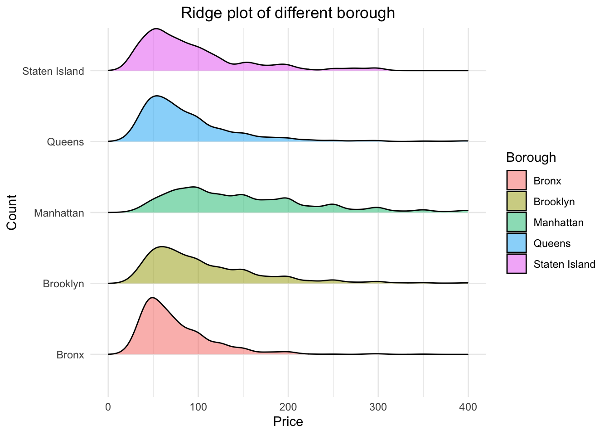
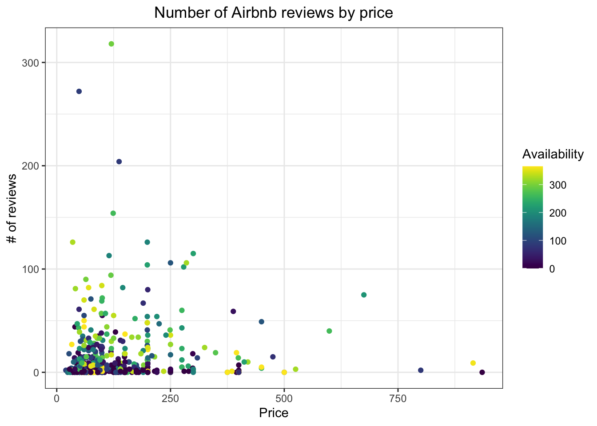
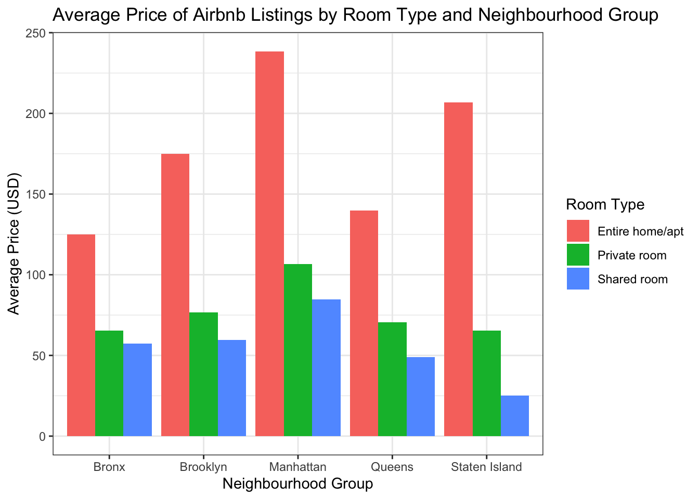

9 Recitation 9
Today you learned…
- How to add labels, themes, scales, and additional features to your ggplot2 visualizations.
Now we’ll practice using the functions we learned in class.
Load any necessary packages in your first chunk of code.
Please work out the following exercises sequentially. There may be more than one way to code the exercises.
9.1 Part I
- Load the NYC Airbnb Dataset.
airbnb <- read_csv("dataset/nyc_airbnb.csv")- Create a histogram of the prices of listings, stratified by
neighbourhood_group. Set the range of your x-axis from 0-750. Change the x-axis label to “Price” and the legend label to “Borough”. Feel free to play around with any aesthetic features! Write one to three sentences about your findings.
airbnb %>%
ggplot() +
geom_histogram(aes(x = price, fill = neighbourhood_group), bins = 30) +
labs(x = "Price", y = "Count", fill = "Borough",
title = "Bar plot of different borough") +
scale_x_continuous(limits = c(0, 750)) +
theme_bw() +
theme(plot.title = element_text(hjust = 0.5))
- Turn your plot from Question 1 into a ridge plot that shows the distribution of price for each borough on separate x-axes. Limit the x axes even further, stopping at $400. Set the alpha level to 0.5 and the scale to 0.8.
airbnb %>%
ggplot() +
geom_density_ridges(aes(x = price, y = neighbourhood_group,
fill = neighbourhood_group), alpha = 0.5, scale = 0.8) +
labs(x = "Price", y = "Count", fill = "Borough",
title = "Ridge plot of different borough") +
scale_x_continuous(limits = c(0, 400)) +
theme_minimal() +
theme(plot.title = element_text(hjust = 0.5))- Create a box plot of availability for each
neighbourhood_group. Reorder the x-axis so that the distributions are shown in increasing order by median (you may have to Google how to do this). Add an appropriate title and axes labels. Write one to three sentences about your findings.
airbnb %>%
ggplot() +
geom_boxplot(aes(x = reorder(neighbourhood_group, availability_365, FUN = median),
y = availability_365, fill = neighbourhood_group)) +
labs(x = "Neighborhood", y = "Availability",
title = "Availability Distributions by NYC Borough") +
scale_fill_manual(values = c("tomato", "limegreen", "aquamarine", "orange", "violet")) +
theme_bw() +
theme(plot.title = element_text(hjust = 0.5))
- Without considering Airbnbs that cost over $1000/night, create a scatter plot of price and number of reviews based off a random sample of 500 Airbnbs (you may have to Google how to do this). Color the points based off of availability using
viridis. Change the theme of your plot to one of your choice. Add appropriate axes labels and a title. Write one to three sentences about your findings.
airbnb %>%
filter(price <= 1000) %>%
sample_n(500) %>%
ggplot() +
geom_point(aes(x = price, y = number_of_reviews, color = availability_365)) +
labs(x = "Price", y = "# of reviews",
title = "Number of Airbnb reviews by price") +
scale_color_viridis(name = "Availability") +
theme_bw() +
theme(plot.title = element_text(hjust = 0.5))9.2 Part II
- Find the listings that are “furnished”/“Furnished” and whose minimum nights are 7 or less. Create 3 plots relating to their number of reviews, price, and availability. Use patchwork to put them together. Write one to three sentences about what you see.
airbnb2 <- airbnb %>%
mutate(name = str_to_lower(name)) %>%
filter(str_detect(name, "furnished")) %>%
filter(minimum_nights <= 7)
p1 <- airbnb2 %>%
ggplot() +
geom_point(aes(x = price, y = availability_365)) +
labs(x = "Price", y = "Availability") +
theme_bw()
p2 <- airbnb2 %>%
ggplot() +
geom_point(aes(x = price, y = number_of_reviews)) +
labs(x = "Price", y = "# of reviews") +
theme_bw()
p3 <- airbnb2 %>%
mutate(price_range = case_when(price < 100 ~ "0-99",
price < 200 ~ "100-199",
price < 300 ~ "200-299",
price < 400 ~ "300-399",
price < 500 ~ "400-499",
TRUE ~ "500+")) %>%
ggplot() +
geom_density(aes(x = availability_365, fill = price_range), alpha = .3) +
labs(x = "Availability", y = "Density", fill = "Price") +
theme_bw()
(p1 + p2) / p3
- Come up with a question and try to answer it by creating one visualization.
# Calculate the average price by room type and neighbourhood group
average_price <- airbnb %>%
group_by(neighbourhood_group, room_type) %>%
summarise(avg_price = mean(price, na.rm = TRUE))
# Create the bar plot
ggplot(average_price, aes(x = neighbourhood_group, y = avg_price, fill = room_type)) +
geom_bar(stat = "identity", position = position_dodge()) +
labs(title = "Average Price of Airbnb Listings by Room Type and Neighbourhood Group",
x = "Neighbourhood Group",
y = "Average Price (USD)",
fill = "Room Type") +
theme_bw()